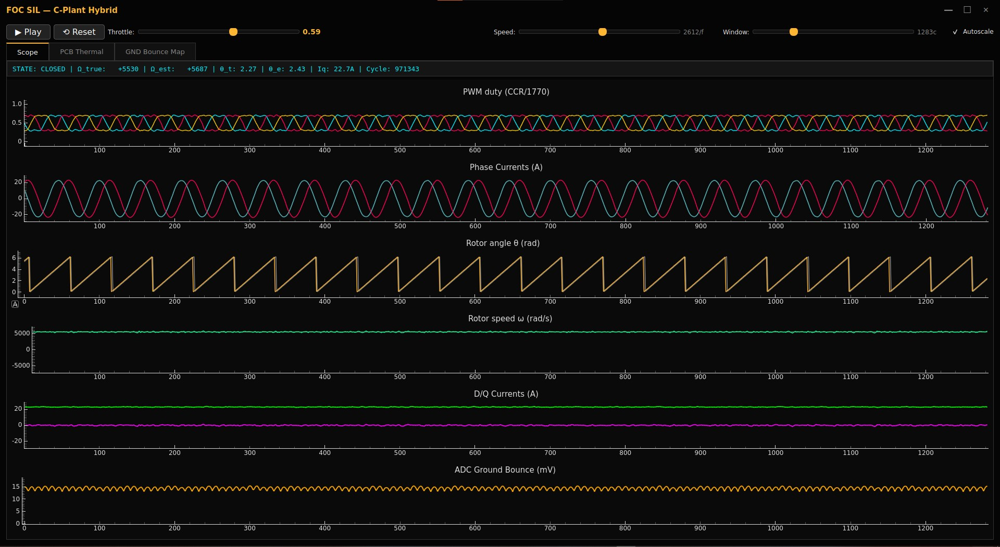
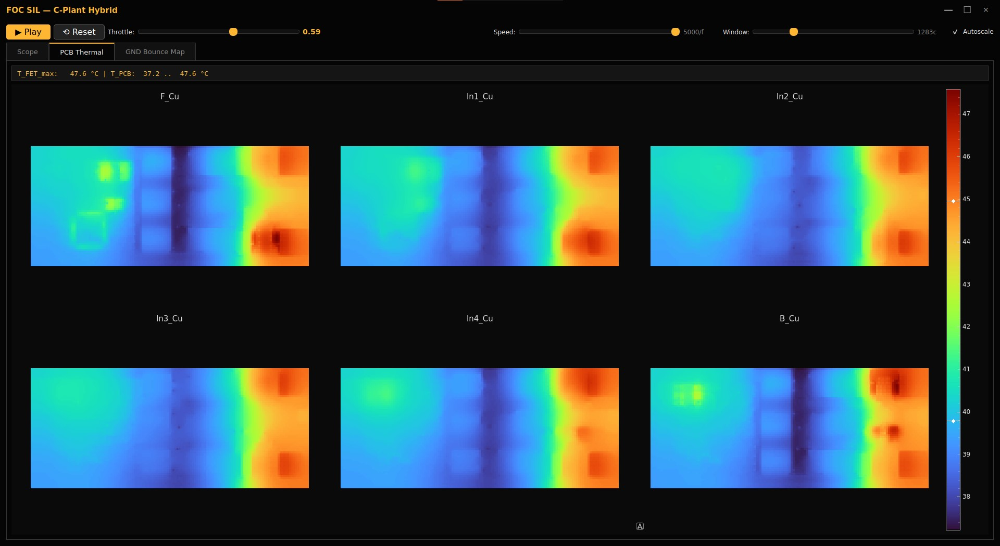
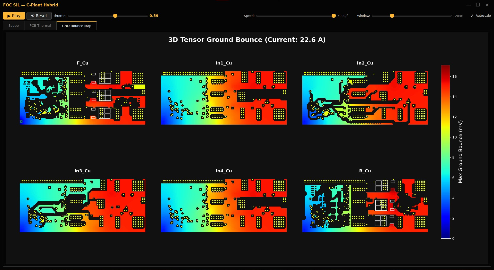
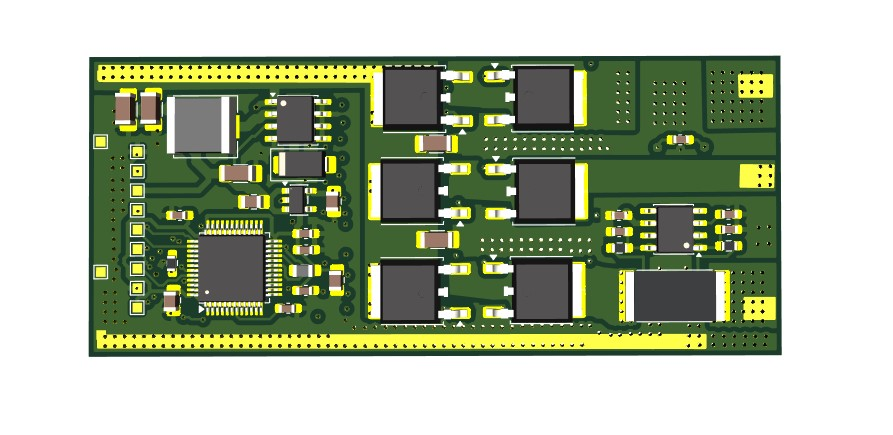
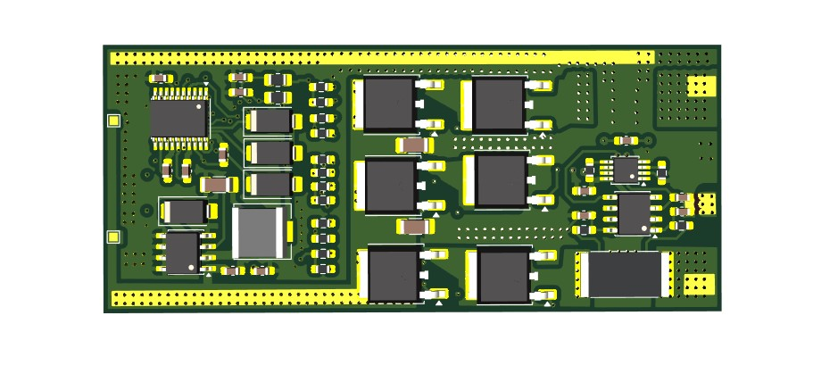

FOC ESC Digital Twin
What it is
A high-fidelity digital twin for a custom 6S drone ESC. It runs a fully closed-loop simulation of a 48 kHz Field Oriented Control (FOC) motor controller, combining bare-metal C firmware, a high-speed C-Plant physics engine, a Python-based thermal solver, and real-hardware validation on actual STM32G431 silicon.
This isn't just a control loop simulation. It is a complete Software-in-the-Loop (SIL) and Hardware-in-the-Loop (HIL) environment that models inverter dead-time, battery voltage sag, 3D ground bounce, and PCB heat diffusion in real-time.
Key Engineering Achievements
- Real-Hardware Benchmarking: Proved flight-readiness by running the FOC loop for 240,000 iterations on the STM32G431, capturing a worst-case execution time of exactly 1,224 cycles (7.2 µs) using the DWT cycle counter.
- C-Plant Physics Engine: Modeled the Permanent Magnet Synchronous Motor (PMSM), 200ns inverter dead-time distortion, MOSFET Rds(on) voltage drops, and battery sag in C, achieving over 150,000 simulation cycles per second.
- 3D Ground Bounce HIL: Extracted real copper resistance from the PCB layout and injected differential ground bounce errors into the ADC measurements in real-time to see how the firmware handles physical noise.
- 6-Layer Thermal FDM: Solved 6-layer PCB heat diffusion in real-time, calculating both conduction (I²R) and switching (Tr/Tf) losses based on FET datasheets.
- 48 kHz Control Loop: Implemented I-f startup to drag the rotor from a dead stop, a Sliding Mode Observer (SMO) with Phase-Locked Loop (PLL), and Space Vector PWM.
Simulation Layers
The digital twin solves multiple physical domains simultaneously. The thermal model tracks heat across the copper layers, while the ground bounce model calculates the voltage differentials caused by high-current switching.


The Physical Hardware
The digital twin is not a generic model—it simulates the exact thermal, parasitic, and ground bounce properties of this finalized custom PCB.


Real Silicon Validation
To prove the firmware is flight-ready, the `main.c` includes a Flash Readout Benchmark. It runs the control loop for exactly 5 seconds (240,000 iterations) and saves the worst-case execution time to the last 2KB page of Flash. Reading this data back via DFU confirmed the loop executes in exactly 1,224 cycles (7.2 µs) — well within the real-time budget.